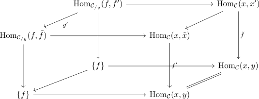

projective object (epimorphism preserving) in the slice category
Proposition
Let $\mathcal{C}$ be a category with simplicial colimits and $x \in \mathcal{C}_{/y}$ an object. Suppose $x$ is a projective object in $\mathcal{C}$, then it is also one in $\mathcal{C}_{/y}$.
Proof
Let $f: x \rightarrow y$ be an object in $\mathcal{C}_{/y}$. We then show that $\mathrm{Hom}_{\mathcal{C}_{/y}}(f,-): \mathcal{C}_{/y} \rightarrow \mathrm{An}$ preserves epimorphisms. Here we use classification of epimorphism in anima, i.e. acyclic map. Recall that epimorphisms in $\mathcal{C}_{/y}$ are epimorphisms in $\mathcal{C}$ (cf. epimorphism in the slice category). Now suppose we have
Suppose

here acyclic map and fiber sequences over an equivalence shows this